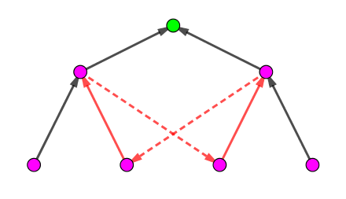
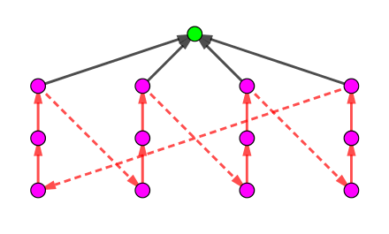

奶牛们从世界各地聚集起来参加一场大型聚会。总共有 $n$ 头奶牛，$n - 1$ 对奶牛互为朋友。每头奶牛都可以通过一些朋友关系认识其他每头奶牛。
她们玩得很开心，但是现在到了她们应当离开的时间了，她们会一个接一个地离开。她们想要以某种顺序离开，使得只要至少还有两头奶牛尚未离开，所有尚未离开的奶牛都还有没有离开的朋友。
此外，由于行李寄存的因素，有 $m$ 对奶牛 $\left( a_i, b_i \right)$ 必须满足奶牛 $a_i$ 要比奶牛 $b_i$ 先离开。注意奶牛 $a_i$ 和奶牛 $b_i$ 可能是朋友，也可能不是朋友。
帮助奶牛们求出，对于每一头奶牛，她是否可以成为最后一头离开的奶牛。可能会发生不存在满足上述要求的奶牛离开顺序的情况。
第一行包含正整数两个空格分隔的整数 $n, m$ ($n, m \leq 10^5$)，表示奶牛的数量和限制奶牛对的数量。
接下来的 $n - 1$ 行，每行两个正整数 $x_i, y_i$ ($1 \leq x_i, y_i \leq n; x_i \neq y_i$)，表示奶牛 $x_i$ 和难处 $y_i$ 是朋友关系。
接下来的 $m$ 行，每行两个正整数 $a_i, b_i$ ($1 \leq a_i, b_i \leq n; a_i \neq b_i$)，表示奶牛 $a_i$ 必须比奶牛 $b_i$ 先离开聚会。
输出 $n$ 行，第 $i$ 行包含一个整数 $d_i$。如果奶牛 $i$ 可以成为最后一头离开的奶牛，则 $d_i = 1$，否则 $d_i = 0$。
容易看出，这些奶牛之间形成了一个树的结构，你需要一次删点，使得每个点在删除前至少有一个未删的邻点，且还有某些限制关系限制了某些点之间的删除顺序。
若 $i$ 是最后一个被删的，我们可以将树看成以 $i$ 为根的内向树 (即子节点指向父节点) $T_i$，对于限制关系 $\left( a_i, b_i \right)$，我们将其看成从 $a_i$ 到 $b_i$ 的有向边。而对于删除的方法，可以等价为每次删一个叶节点。
则 $i$ 能最后一个删当且仅当 $T_i$ 是 DAG。
考虑具体怎么处理。假如有一条从 $a$ 到 $b$ 的限制边，则以 $b$ 为根 $a$ 的子树中的所有点都不能作为根了，否则内向树中将会存在一条从 $b$ 到 $a$ 的路径，从而出现了环，矛盾。
同理，我们对所有这种类型的限制边都标记一棵子树，就得到了一些一定不能作为根的节点的集合。那么剩下的点一定可以作为根吗？
不一定。比如下图这个例子：
两个限制边分别标记绿色点的左右两棵子树，而绿色点也不能作为根，因为出现了环 (红色边集)。
注意到在这种情况下，所有的点都不能做作为根 (即无解)，那么是否出现这种情况就一定无解了呢？
答案是肯定的。
设出现了这种情况，由于每条限制边都不标记根，因此它们之间的路径一定包含根。那么，这种环只有可能是如下情况：
在这个时候，以最高粉色点为根的子树都被标记，而其余情况中，红色边的定向和上图相同，于是出现了那个红色大环，故无解。
因此，我们只需判断一下无解情况。具体实现的时候，我们对限制边 $a, b$，在标记那个子树的同时顺便将它们定向，如果定向之后的新图 (连同限制边) 出现了环，就是无解的情况，否则，上面的算法就是正确了。
注意使用 used 数组保证复杂度 (每个点只会被定向一次)，找到那个子树的方向可以使用 jump_until (倍增) 算法，子树标记可以转化为 dfs 序后使用差分 - 前缀和解决。
总时间复杂度 $O \left( n \log n \right)$。
#include <bits/stdc++.h>
const int N = 100010, M = N * 6, LN = 17;
int V, E, Es = 0;
int to[M], first[N], next[M], cyc_first[N];
int cnt = 0, o[N], id[N], eid[N];
int dep[N], P[LN][N], *p = *P;
int fy[N], newP[N];
int deg[N], que[N];
inline void addedge(int u, int v, int id, int *fst) {to[id] = v; next[id] = fst[u]; fst[u] = id;}
void dfs(int x) {
int i, y;
o[++cnt] = x; id[x] = cnt;
for (i = 0; i < LN - 1 && P[i][x]; ++i)
P[i + 1][x] = P[i][P[i][x]];
for (i = first[x]; i; i = next[i])
if ((y = to[i]) != p[x]) {
dep[y] = dep[x] + 1;
p[y] = x; dfs(y);
}
eid[x] = cnt;
}
int jump_until(int x, int d){
for (int i = LN - 1; i >= 0; --i)
if (dep[x] - (1 << i) >= d)
x = P[i][x];
return x;
}
int LCA(int x, int y) {
int i;
if (dep[x] < dep[y]) std::swap(x, y);
x = jump_until(x, dep[y]);
if (x == y) return x;
for (i = LN - 1; i >= 0; --i)
if (P[i][x] != P[i][y])
x = P[i][x], y = P[i][y];
return p[x];
}
bool fail() {for (; V; --V) putchar(48), putchar(10); return exit(0), false;}
bool force(int x, int px) {
int i, y;
for (i = first[x]; i; i = next[i])
if ((y = to[i]) != px) {
if (!newP[y]) {
addedge(y, x, ++Es, cyc_first), newP[y] = x;
if (!force(y, x)) return false;
}
else if (newP[y] != x) return false;
}
return true;
}
bool toposort() {
int h, t = 0, x, y, i;
memset(deg, 0, (V + 1) << 2);
for (i = 2 * V - 1; i <= Es; ++i) ++deg[to[i]];
for (i = 1; i <= V; ++i) if(!deg[i]) que[t++] = i;
for (h = 0; h < t; ++h)
for (i = cyc_first[x = que[h]]; i; i = next[i])
if (!--deg[y = to[i]])
que[t++] = y;
return t == V;
}
int main() {
int i, u, v, cu;
scanf("%d%d", &V, &E);
for (i = 1; i < V; ++i) scanf("%d%d", &u, &v), addedge(u, v, ++Es, first), addedge(v, u, ++Es, first);
dfs(1);
for (i = 1; i <= E; ++i) {
scanf("%d%d", &u, &v);
addedge(u, v, ++Es, cyc_first);
if (u == LCA(u, v)) {
cu = jump_until(v, dep[u] + 1);
++fy[1], --fy[id[cu]], ++fy[eid[cu] + 1];
force(u, cu) || fail();
} else ++fy[id[u]], --fy[eid[u] + 1], force(u, p[u]) || fail();
}
toposort() || fail();
for (i = 1; i <= V; ++i) fy[i] += fy[i - 1];
for (i = 1; i <= V; ++i) putchar(48 | !fy[id[i]]), putchar(10);
return 0;
}
坑1：判环可以使用拓扑排序 (或 SPFA，Tarjan 等)，注意边的编号不要搞乱。
坑2：注意 dfs 序差分的姿势。如果只用差分与前缀和，则会被叉掉，具体可以见题解中的图。